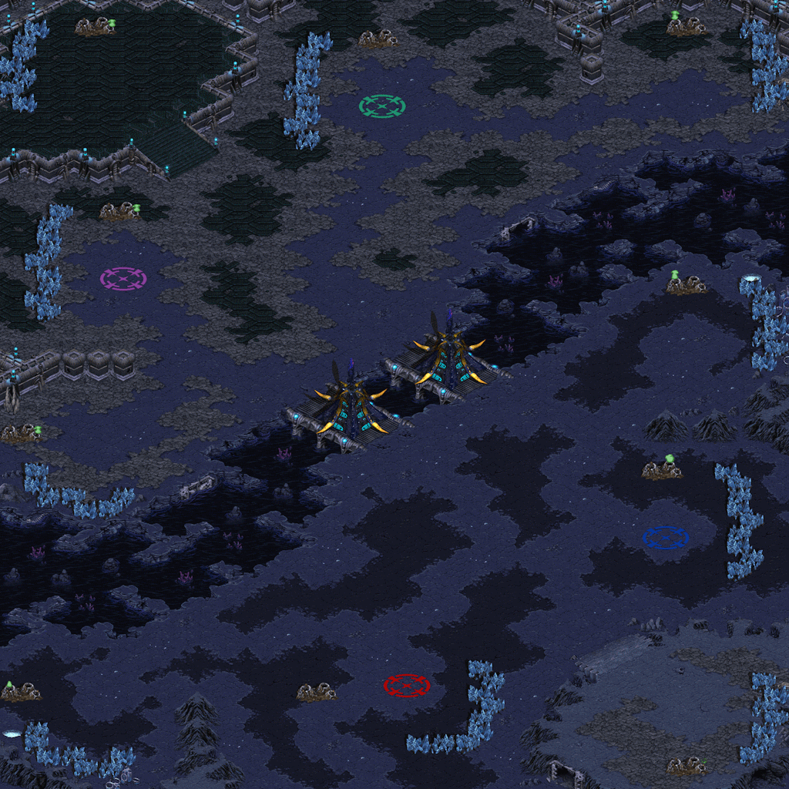
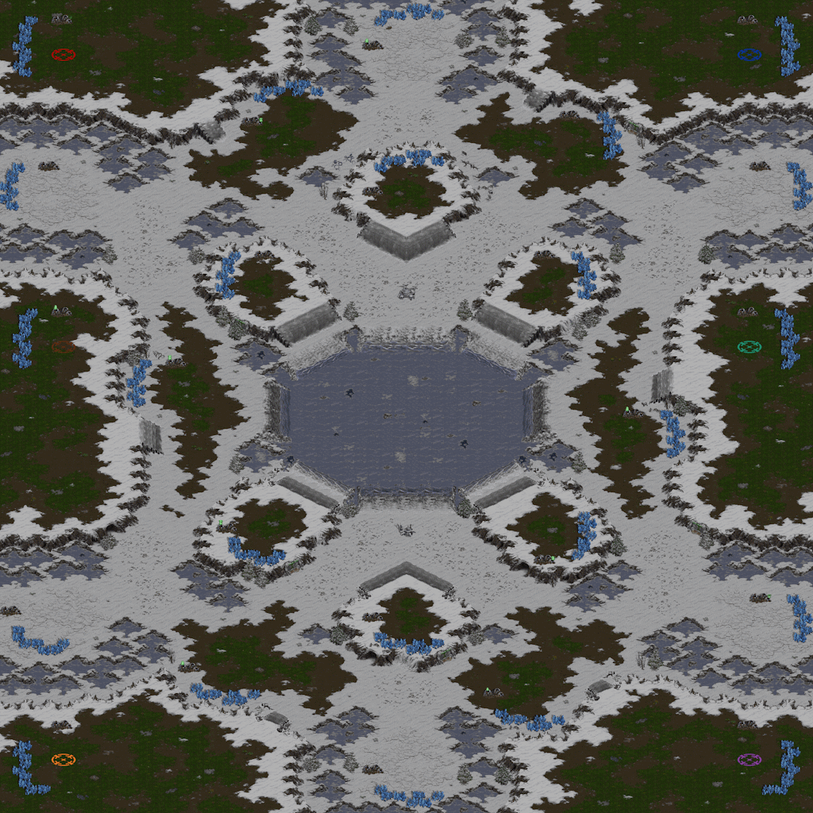
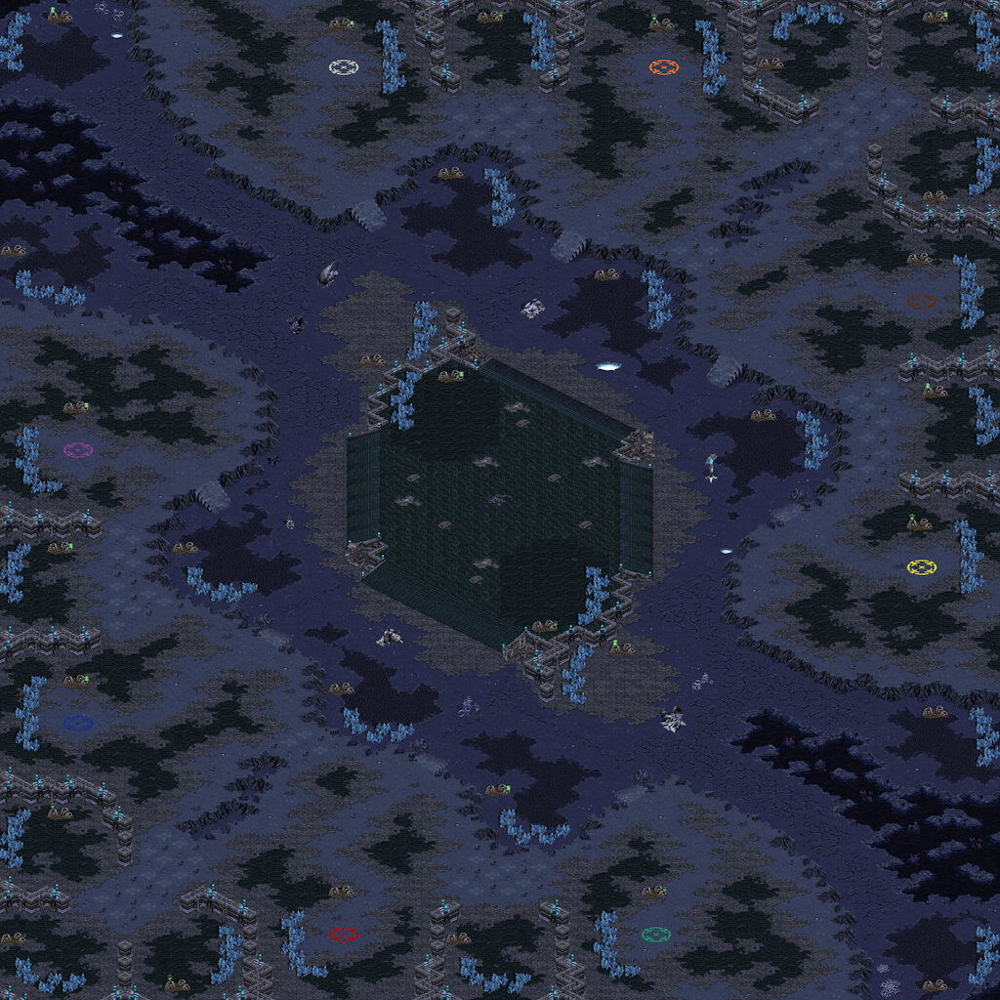
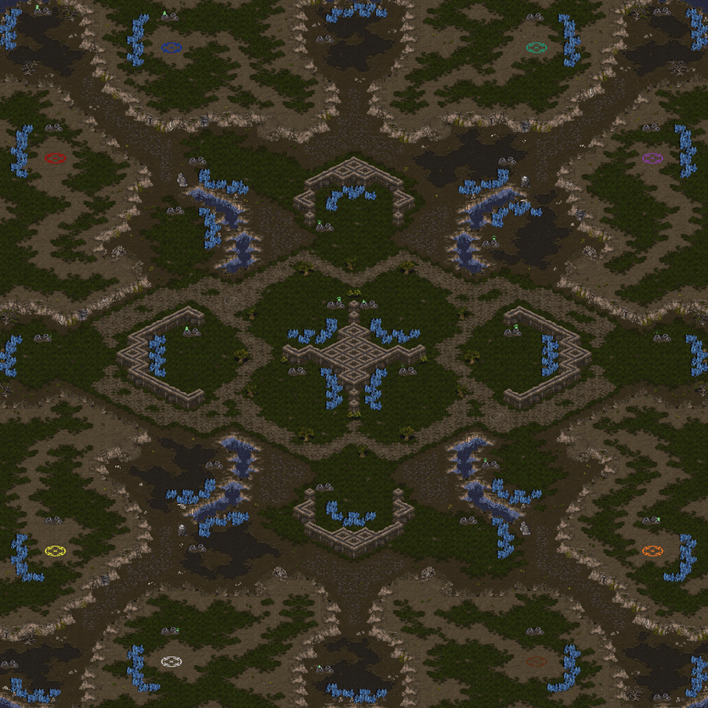
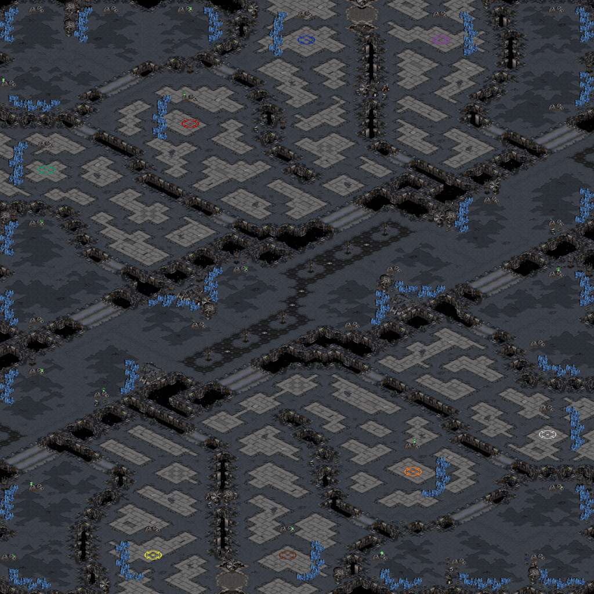
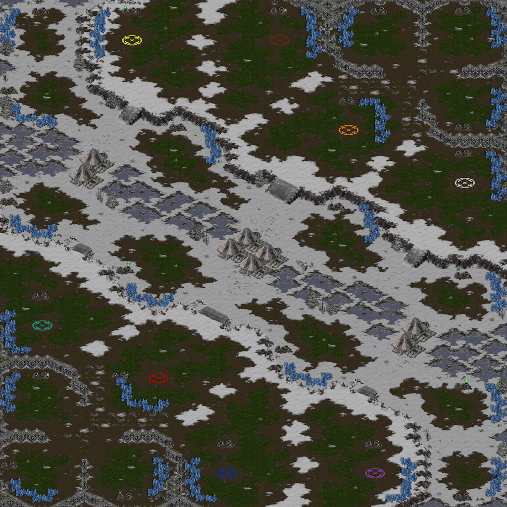
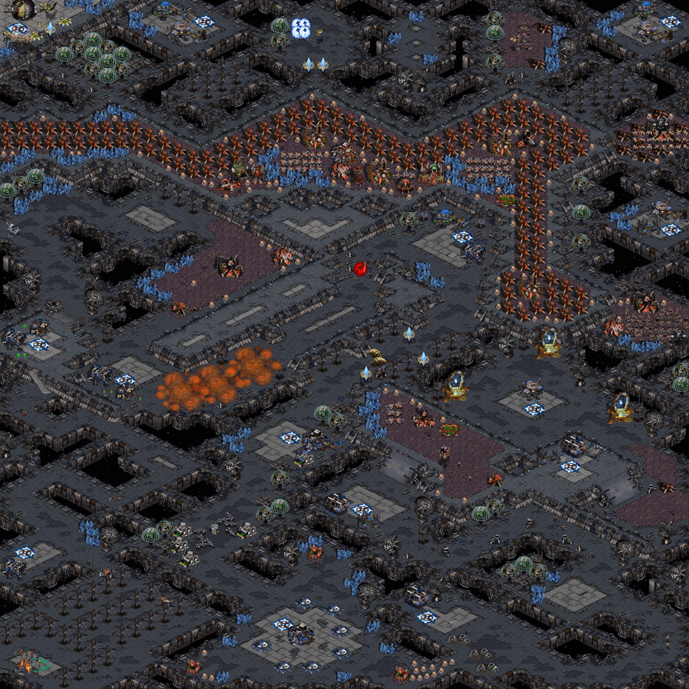

acodcha's StarCraft Maps
Custom-made maps for the StarCraft: Brood War and StarCraft: Remastered video games by Blizzard Entertainment
GitHub Repository · acodcha's Profile
This repository contains my custom-made maps for the StarCraft: Brood War and StarCraft: Remastered video games by Blizzard Entertainment. Maps used in professional leagues are typically designed for 1vs1 games, whereas my maps focus on 2vs2, 3vs3, and 4vs4 team games.
To play a map, simply download its .scx file and place it
anywhere in your StarCraft maps directory, which is typically
C:\Program Files (x86)\StarCraft\Maps\. When creating a
game, select the Use Map Settings option; otherwise, player
starting locations may be randomized rather than team-based.
My Battle.net BattleTag is acodcha#1294. If you see
me online, drop by and say hello!
2vs2 | 3vs3 | 4vs4 | Scenarios
| Careening Blues | Intertwined Platforms |
|  |

|
| Rustic Frontier | |

|
| Beltway Blitz | Cloistered Vale |

|

|
| Frigid Basin | Magmatic Delve |
|  |

|
| Motley Turnpike | |

|
| Azurean Reliquary | Isthmus Scramble |
|  |

|
| Luxuriant Sanctuary | Stratal Concourse |
|  |  |
| Sweltering Tar | Wintry Gully |

|
 |
| Cooperative Defense | Terran Obstacle Course |

|
 |
| Zerg Obstacle Course | |

|
This work is maintained by Alexandre Coderre-Chabot (https://github.com/acodcha) and licensed under the Creative Commons Attribution 4.0 International license. For more details, see https://creativecommons.org/licenses/by/4.0. This work is based on the StarCraft: Brood War and StarCraft: Remastered video games by Blizzard Entertainment. The contents, copyrights, and trademarks of everything involving StarCraft, StarCraft: Brood War, and StarCraft: Remastered are exclusively held by Blizzard Entertainment; I make no claim to any of these in any way. All maps are made using the ScmDraft 2 map editor by Stormcoast Fortress (http://www.stormcoast-fortress.net/cntt/software/scmdraft).